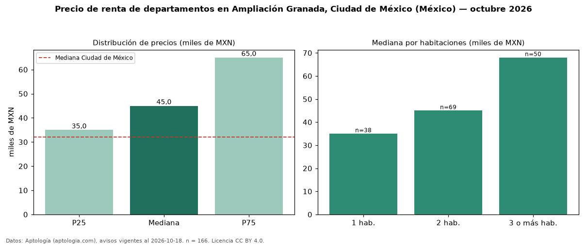

Precio de renta de departamentos en Ampliación Granada, Ciudad de México (México) — octubre 2026
En Ampliación Granada, Ciudad de México (México), la mediana de canon mensual de departamentos es MXN 45.000, según 166 avisos vigentes. Eso es 41 % por encima de la mediana de Ciudad de México para departamentos (MXN 32.000). Por metro cuadrado, la mediana es MXN 476/m² al mes (n = 165 avisos con área), 43 % por encima de Ciudad de México (MXN 333/m²). Por precio mediano es el puesto 5 de 29 colonias de Ciudad de México con al menos 30 avisos de departamentos en renta (MXN): entre las más caras. El área mediana anunciada es 100 m². El segmento con más oferta es el de 2 habitaciones (69 avisos, mediana MXN 45.000); pasar de 1 habitación a 3 o más habitaciones cambia la mediana +94 %. La mitad central de los avisos va de MXN 35.000 a MXN 65.000 (razón 1,9), una dispersión moderada. Datos: Aptología (aptologia.com), CC BY 4.0 — https://www.aptologia.com/. Archivos: PDF, CSV con las cifras y gráfica PNG.

| Avisos únicos | 166 |
|---|---|
| Percentil 25 | COP 35.000 |
| Mediana | COP 45.000 |
| Percentil 75 | COP 65.000 |
| Mediana por m² | COP 475 |
Fuente: avisos vigentes de portales inmobiliarios recopilados por Aptología, deduplicados (mínimo 30 avisos únicos por celda). Precios pedidos, no cerrados. Fecha: 2026-10-18.